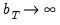
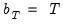
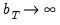
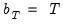

The matrix  , which we term the strict
, which we term the strict one-sided LRCOV, is the sum of the lag covariances, while the also includes the contemporaneous covariance

. The two-sided LRCOV matrix

is related to the one-sided matrices through and .
The bandwidth  operates in concert with the kernel function to determine the weights for the various sample autocovariances in Equation (60.35)
operates in concert with the kernel function to determine the weights for the various sample autocovariances in Equation (60.35). While some authors restrict the bandwidth values to integers, we follow Andrews (1991) who argues in favor of allowing real valued bandwidths.
For the great majority of supported kernels for so that the bandwidth acts indirectly as a lag truncation parameter. Relating  to the corresponding integer lag number of included lags
to the corresponding integer lag number of included lags  requires, however, examining the properties of the kernel at the endpoints . For kernel functions where (e.g.
requires, however, examining the properties of the kernel at the endpoints . For kernel functions where (e.g., Truncated, Parzen-Geometric, Tukey-Hanning),

is simply a real-valued truncation lag, with at most autocovariances having non-zero weight. Alternately, for kernel functions where (
e.g., Bartlett, Bohman, Parzen), the relationship is slightly more complex, with autocovariances entering the estimator with non-zero weights.
Andrews (1991) and Newey and West (1994) offer two approaches to estimating  . We may term these techniques automatic bandwidth selection methods
. We may term these techniques automatic bandwidth selection methods, since they involve estimating the optimal bandwidth from the data, rather than specifying a value
a priori. Both the Andrews and Newey-West estimators for

may be written as:
which may be inserted into Equation (60.39) to obtain expressions for the optimal bandwidths.
for . This expression may be inserted into Equation (60.39) to obtain the expression for the plug-in optimal bandwidth estimator.
In comparing the Andrews estimator Equation (60.42) with the Newey-West estimator
Equation (60.45) we see two very different methods of distilling results from the

-dimensions of the original data into a scalar measure

. Andrews computes parametric estimates of the generalized derivatives for the

individual elements, then aggregates the estimates into a single measure. In contrast, Newey and West aggregate early, forming linear combinations of the autocovariance matrices, then use the scalar results to compute nonparametric estimators of the Parzen smoothness measures.
Den Haan and Levin (1997) advocate the use of parametric methods, notably VARs, for LRCOV estimation. The VAR spectral density estimator, which they term VARHAC, involves estimating a parametric VAR model to filter the

, computing the contemporaneous covariance of the filtered data, then using the estimates from the VAR model to obtain the implied autocovariances and corresponding LRCOV matrix of the original data.
Andrews and Monahan (1992) propose a simple modification of the kernel estimator which performs a parametric VAR prewhitening step to reduce autocorrelation in the data followed by kernel estimation performed on the whitened data. The resulting prewhitened LRVAR estimate is then
recolored to undo the effects of the transformation. The Andrews and Monahan approach is a hybrid that combines the parametric VARHAC and nonparametric kernel techniques.
The prewhitened kernel procedure differs from VARHAC only in the computation of the LRCOV of the residuals. The VARHAC estimator in Equation (60.48) assumes that the residuals are white noise so that the LRCOV may be estimated using the contemporaneous variance matrix , while the prewhitening kernel estimator in
Equation (60.52) allows for residual heteroskedasticity and serial dependence through its use of the HAC estimator . Accordingly, it may be useful to view the VARHAC procedure as a special case of the prewhitened kernel with and for .


are two measures of the one-sided LRCOV matrix:
are often referred to as heteroskedasticity and autocorrelation consistent (HAC) covariance matrix estimators.
by taking a weighted sum of the sample autocovariances of the observed data.
.
is obtained by “recoloring” the prewhitened LRCOV to undo the effects of the whitening transformation.
is a symmetric kernel (or lag window) function that, among other conditions, is continous at the origin and satisfies for all
with , and is a bandwidth parameter. The leading term is an optional correction for degrees-of-freedom associated with the estimation of the
parameters in
.
and the constant depend on properties of the selected kernel and is an estimator of
, a measure of the smoothness of the spectral density at frequency zero that depends on the autocovariances
. Substituting into Equation (60.37), the resulting plug-in estimator for the optimal automatic bandwidth is given by:
that one uses depends on properties of the selected kernel function. The Bartlett and Parzen-Geometric kernels should use
since they have .
should be used for the other EViews supported kernels which have . The Truncated kernel does not have a theoretically proscribed choice, but Andrews recommends using
. The Daniell kernel has
, though we remind you that it does not satisfy the conditions for Andrews’s theorems. “Kernel Function Properties” summarizes the values of
and
for the various kernel functions.

from
to
, where
, which Newey and West term the lag selection parameter, may be viewed as the bandwidth of a kernel estimator for .


 -vectors that may depend on a
-vectors that may depend on a  ‑vector of parameters
‑vector of parameters  , and let where
, and let where  is the true value of
is the true value of  . We are interested in estimating the LRCOV matrix
. We are interested in estimating the LRCOV matrix  ,
, at lag
at lag  . When is second-order stationary,
. When is second-order stationary,  equals
equals  times the spectral density matrix of
times the spectral density matrix of  evaluated at frequency zero (Hansen 1982, Andrews 1991, Hamilton 1994).
evaluated at frequency zero (Hansen 1982, Andrews 1991, Hamilton 1994). , since results are generally applicable to all three measures; exception will be made for specific issues that require additional comment.
, since results are generally applicable to all three measures; exception will be made for specific issues that require additional comment. :
:
 for for all kernels with the exception of the Daniell and the Quadratic Spectral. The Daniell kernel is presented in truncated form in Neave (1972), but EViews uses the more common untruncated form. The Bartlett kernel is sometimes referred to as the Fejer kernel (Neave 1972).
for for all kernels with the exception of the Daniell and the Quadratic Spectral. The Daniell kernel is presented in truncated form in Neave (1972), but EViews uses the more common untruncated form. The Bartlett kernel is sometimes referred to as the Fejer kernel (Neave 1972). is chosen so that  and as . Alternately, Kiefer and Vogelsang (2002) propose setting  in a testing context.
is chosen so that  and as . Alternately, Kiefer and Vogelsang (2002) propose setting  in a testing context. weighted autocovariance lags requires setting . In contrast, Hansen’s (1982) or White’s (1984) estimators, which sum the first
weighted autocovariance lags requires setting . In contrast, Hansen’s (1982) or White’s (1984) estimators, which sum the first  unweighted autocovariances, should be implemented using the Truncated kernel with .
unweighted autocovariances, should be implemented using the Truncated kernel with . is a constant, and
is a constant, and  is a parameter that depends on the kernel function that you select (Parzen 1958, Andrews 1991). For the Bartlett and Parzen-Geometric kernels
is a parameter that depends on the kernel function that you select (Parzen 1958, Andrews 1991). For the Bartlett and Parzen-Geometric kernels  should grow (at most) at the rate . The Truncated kernel does not have an theoretical optimal rate, but Andrews (1991) reports Monte Carlo simulations that suggest that
should grow (at most) at the rate . The Truncated kernel does not have an theoretical optimal rate, but Andrews (1991) reports Monte Carlo simulations that suggest that  works well. The remaining EViews supported kernels have so their optimal bandwidths grow at rate (though we point out that Daniell kernel does not satisfy the conditions for the optimal bandwidth theorems).
works well. The remaining EViews supported kernels have so their optimal bandwidths grow at rate (though we point out that Daniell kernel does not satisfy the conditions for the optimal bandwidth theorems). does not tell us the optimal bandwidth for a given sample size, since the constant
does not tell us the optimal bandwidth for a given sample size, since the constant  remains unspecified.
remains unspecified. that requires forming preliminary estimates of
that requires forming preliminary estimates of  and the smoothness of
and the smoothness of  . Andrews and Newey-West offer alternative methods for forming these estimates.
. Andrews and Newey-West offer alternative methods for forming these estimates. parametrically: fitting a simple parametric time series model to the original data, then deriving the autocovariances
parametrically: fitting a simple parametric time series model to the original data, then deriving the autocovariances  and corresponding
and corresponding  implied by the estimated model.
implied by the estimated model. formulae for several parametric models, noting that the choice between specifications depends on a tradeoff between simplicity and parsimony on one hand and flexibility on the other. EViews employs the parsimonius approach used by Andrews in his Monte Carlo simulations, estimating
formulae for several parametric models, noting that the choice between specifications depends on a tradeoff between simplicity and parsimony on one hand and flexibility on the other. EViews employs the parsimonius approach used by Andrews in his Monte Carlo simulations, estimating  -univariate AR(1) models (one for each element of ), then combining the estimated coefficients into an estimator for .
-univariate AR(1) models (one for each element of ), then combining the estimated coefficients into an estimator for . are parametric estimators of the smoothness of the spectral density for the
are parametric estimators of the smoothness of the spectral density for the  -th variable (Parzen’s (1957)
-th variable (Parzen’s (1957)  ‑th generalized spectral derivatives) at frequency zero. Estimators for are given by:
‑th generalized spectral derivatives) at frequency zero. Estimators for are given by: , where are the estimated autocovariances at lag
, where are the estimated autocovariances at lag  implied by the univariate AR(1) specification for the
implied by the univariate AR(1) specification for the  ‑th variable.
‑th variable. , we have:
, we have: depend on the weighting vector
depend on the weighting vector  which governs how we combine the individual into a single measure of relative smoothness. Andrews suggests using either
which governs how we combine the individual into a single measure of relative smoothness. Andrews suggests using either  for all
for all  or
or  for all but the instrument corresponding to the intercept in regression settings. EViews adopts the first suggestion, setting for all
for all but the instrument corresponding to the intercept in regression settings. EViews adopts the first suggestion, setting for all  .
. . In contrast to Andrews who computes parametric estimates of the individual , Newey-West uses a Truncated kernel estimator to estimate the
. In contrast to Andrews who computes parametric estimates of the individual , Newey-West uses a Truncated kernel estimator to estimate the  corresponding to aggregated data.
corresponding to aggregated data. may either be viewed as the sample autocovariance of a weighted linear combination of the data using weights , or as a weighted combination of the sample autocovariances.
may either be viewed as the sample autocovariance of a weighted linear combination of the data using weights , or as a weighted combination of the sample autocovariances. to compute nonparametric truncated kernel estimators of the Parzen measures of smoothness:
to compute nonparametric truncated kernel estimators of the Parzen measures of smoothness: , the lag-selection parameter, which governs how many autocovariances to use in forming the nonparametric estimates of . Newey and West show that
, the lag-selection parameter, which governs how many autocovariances to use in forming the nonparametric estimates of . Newey and West show that  should increase at (less than) a rate that depends on the properties of the kernel. For the Bartlett and the Parzen-Geometric kernels, the rate is . For the Quadratic Spectral kernel, the rate is . For the remaining kernels, the rate is (with the exception of the Truncated and the Daniell kernels, for which the Newey-West theorems do not apply).
should increase at (less than) a rate that depends on the properties of the kernel. For the Bartlett and the Parzen-Geometric kernels, the rate is . For the Quadratic Spectral kernel, the rate is . For the remaining kernels, the rate is (with the exception of the Truncated and the Daniell kernels, for which the Newey-West theorems do not apply). . Newey-West (1987) leave open the choice of
. Newey-West (1987) leave open the choice of  , but follow Andrew’s (1991) suggestion of
, but follow Andrew’s (1991) suggestion of  for all but the intercept in their Monte Carlo simulations. EViews differs from this choice slightly, setting
for all but the intercept in their Monte Carlo simulations. EViews differs from this choice slightly, setting  for all
for all  .
. ) model to the . Let be the
) model to the . Let be the  matrix of estimated
matrix of estimated  -th order AR coefficients,
-th order AR coefficients,  . Then we may define the innovation (filtered) data and estimated innovation covariance matrix as:
. Then we may define the innovation (filtered) data and estimated innovation covariance matrix as: and the VAR coefficients , we can compute the implied theoretical autocovariances of
and the VAR coefficients , we can compute the implied theoretical autocovariances of  . Summing the autocovariances yields a parametric estimator for
. Summing the autocovariances yields a parametric estimator for  , given by:
, given by: , the order of the VAR. Den Haan and Levin use model selection criteria (AIC or BIC-Schwarz) using a maximum lag of
, the order of the VAR. Den Haan and Levin use model selection criteria (AIC or BIC-Schwarz) using a maximum lag of  to determine the lag order, and provide simulations of the performance of estimator using data-dependent lag order.
to determine the lag order, and provide simulations of the performance of estimator using data-dependent lag order. do not have simple expressions in terms of and . We can, however, obtain insight into the construction of the one-sided VARHAC LRCOVs by examining results for the VAR(1) case. Given estimation of a VAR(1) specification, the estimators for the one-sided long-run variances may be written as:
do not have simple expressions in terms of and . We can, however, obtain insight into the construction of the one-sided VARHAC LRCOVs by examining results for the VAR(1) case. Given estimation of a VAR(1) specification, the estimators for the one-sided long-run variances may be written as: .
.  so that the estimates of
so that the estimates of  and
and  employ a mix of parametric and non-parametric autocovariance estimates. Alternately, in keeping with the spirit of the parametric methodology, EViews constructs a parametric estimator using the estimated VAR(1) coefficients and .
employ a mix of parametric and non-parametric autocovariance estimates. Alternately, in keeping with the spirit of the parametric methodology, EViews constructs a parametric estimator using the estimated VAR(1) coefficients and . ) model to the and obtain the whitened data (residuals):
) model to the and obtain the whitened data (residuals): values that are closer to white-noise. (In addition, Andrews and Monahan adjust their VAR(1) estimates to avoid singularity when the VAR is near unstable, but EViews does not perform this eigenvalue adjustment.)
values that are closer to white-noise. (In addition, Andrews and Monahan adjust their VAR(1) estimates to avoid singularity when the VAR is near unstable, but EViews does not perform this eigenvalue adjustment.)